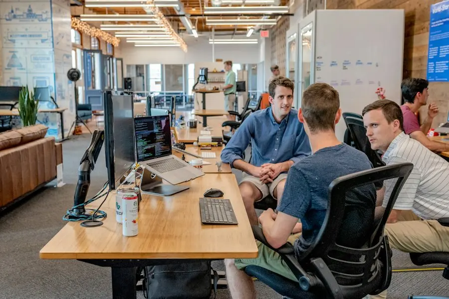

Estrategia digital
Definimos el problema, el público y el camino más corto hacia un resultado medible.
- Investigación y mapa de usuario
- Arquitectura de contenido
- Métricas de éxito
Diseñamos y construimos experiencias web claras, rápidas y medibles. Estrategia, interfaz e ingeniería trabajando como una sola pieza.
Un equipo pequeño, un proceso claro y entregables concretos. Sin capas innecesarias entre la idea y el producto.
Definimos el problema, el público y el camino más corto hacia un resultado medible.
Interfaces que explican por sí solas. Sistemas visuales consistentes y accesibles desde el primer prototipo.
Código mantenible, carga rápida y una base sólida para crecer sin reescribir todo el proyecto.

Trabajamos en ciclos cortos con entregas visibles. Cada decisión se puede revisar, probar y ajustar antes de avanzar.
Escenarios ficticios para explorar el proceso de trabajo.
Reunir necesidades, agrupar servicios y probar una navegación corta antes de diseñar las páginas.
Definir categorías, preparar fichas de producto y comprobar que la búsqueda funciona en pantallas pequeñas.
Revisar el contenido, priorizar las acciones principales y entregar una interfaz lista para mantener.
Explora el resto de los proyectos del portafolio.